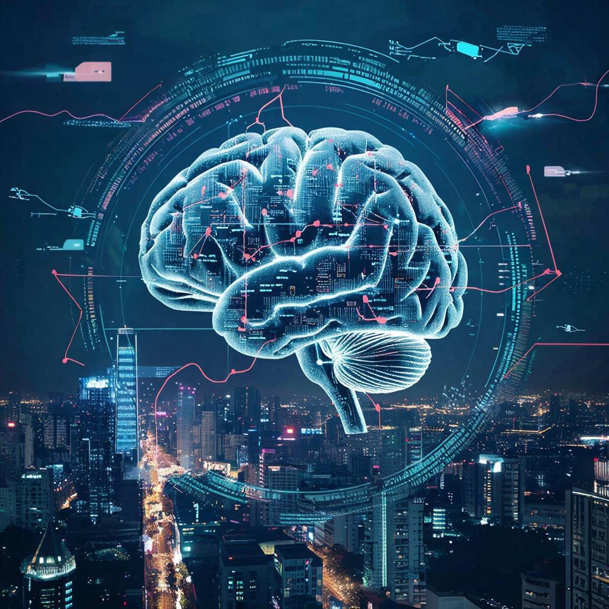
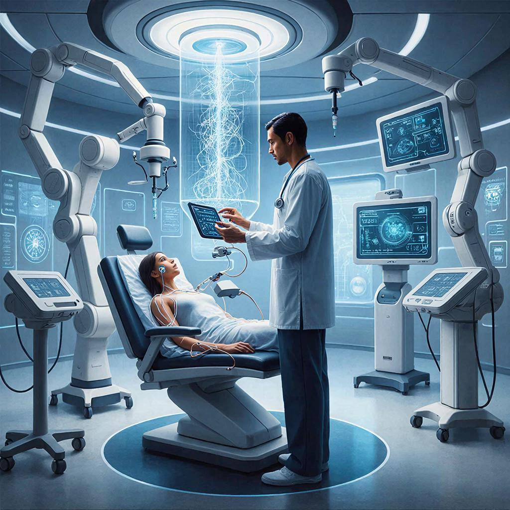
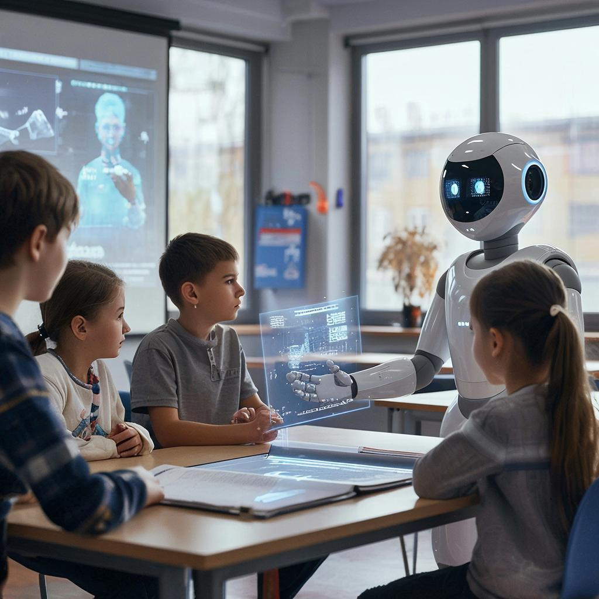
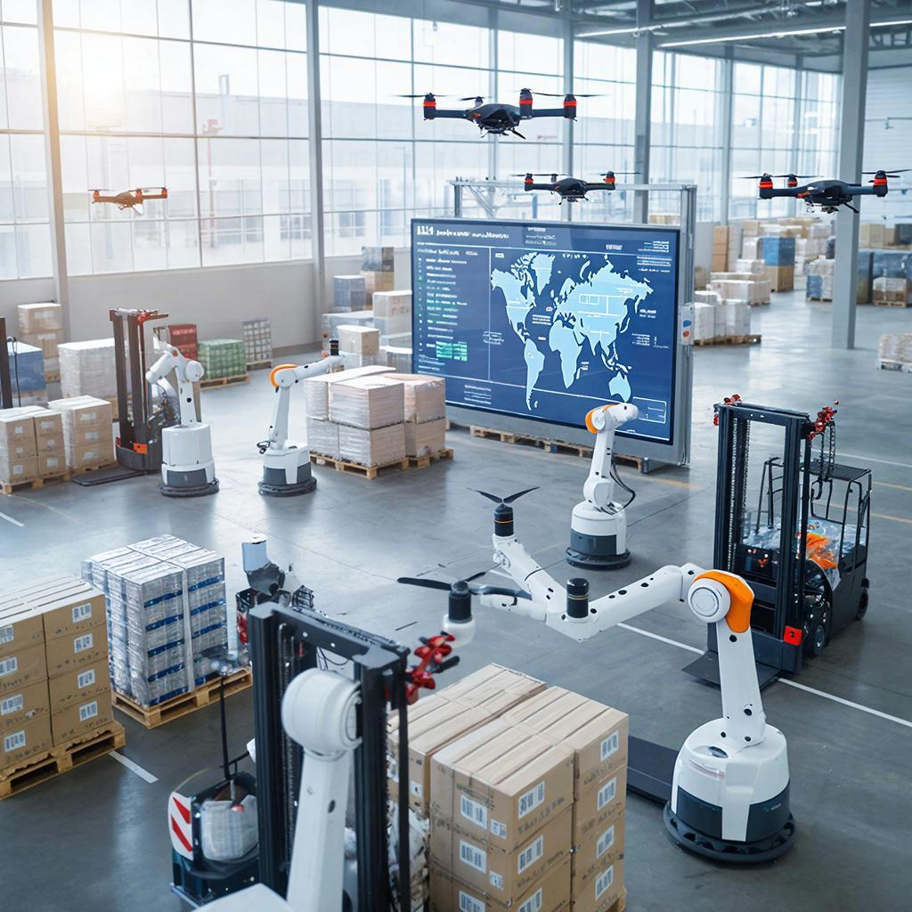
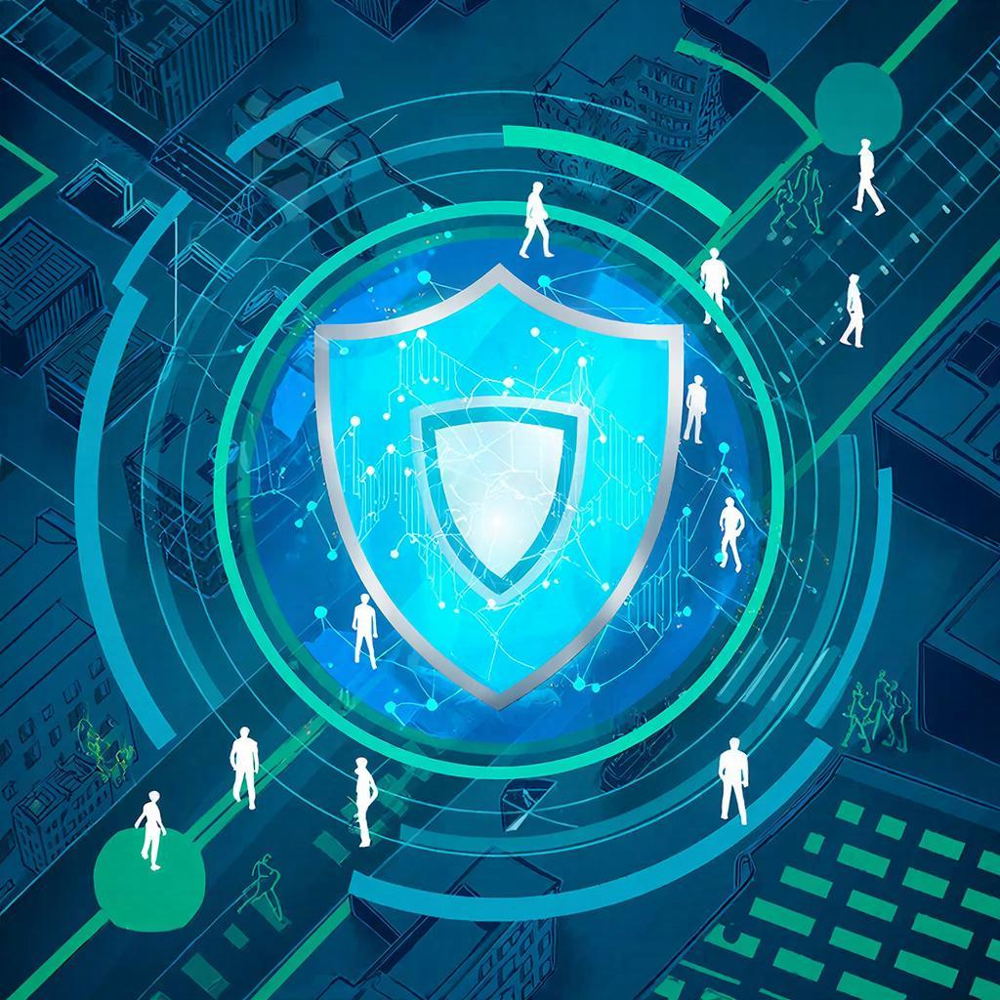

Добро пожаловать!
Здесь вы найдете всю необходимую информацию о технологиях искусственного интеллекта.
Что такое искусственный интеллект?
Искусственный интеллект (ИИ) — это способность машин имитировать человеческое мышление и поведение, решать задачи, анализировать большие объемы данных и даже учиться самостоятельно.
Как ИИ меняет нашу жизнь?
Медицина:
Алгоритмы глубокого обучения помогают врачам ставить диагнозы быстрее и точнее, выявлять заболевания на ранних стадиях, разрабатывать новые методы лечения и персонализированные препараты.
Образование:
Онлайн-курсы адаптивного обучения предлагают индивидуальный подход к каждому ученику, позволяя развивать именно те навыки, которые необходимы конкретному человеку.
Транспорт и логистика:
Автономные транспортные средства становятся частью нашего будущего. Машины, управляемые алгоритмами ИИ, способны минимизировать количество аварий, снижать затраты топлива и повышать общую безопасность дорожного движения.
Безопасность и защита:
Алгоритмы компьютерного зрения и обработки больших объемов данных активно используются правоохранительными органами и службами безопасности, помогая предотвращать преступления и поддерживать общественный порядок.
Этические вопросы и ответственность
Использование технологий ИИ требует соблюдения строгих норм конфиденциальности и защиты персональных данных. Необходимо совершенствовать алгоритмы и внедрять механизмы контроля качества решений.
Заключение
Искусственный интеллект открывает перед нами невероятные перспективы, предлагая уникальные решения для многих проблем современности. Развитие ИИ должно идти рука об руку с ответственностью и соблюдением этических принципов, создавая будущее, в котором машины станут настоящими помощниками человечества.